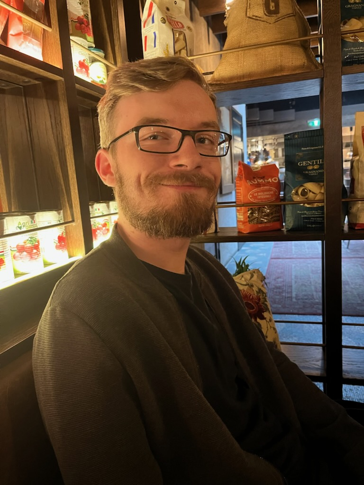
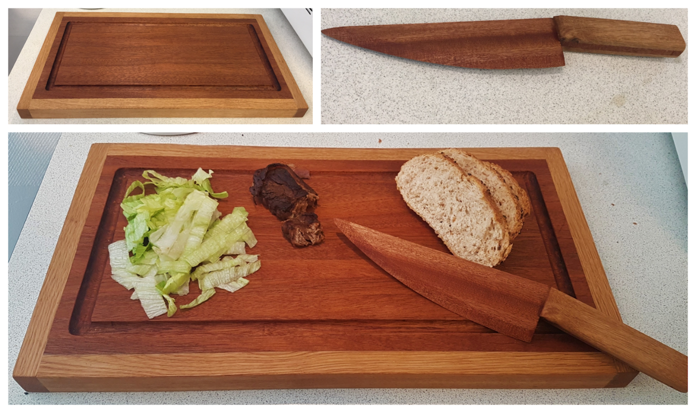

Starten på Portfolio
Mit navn er Oscar Samsø Sørensen og velkommen til min hjemmeside.
Denne hjemmeide vil fungere som et samlet sted for info om mig og
hvad jeg kommer til at lave under mit studie på EK.
Mit navn er Oscar Samsø Sørensen og velkommen til min hjemmeside.
Denne hjemmeide vil fungere som et samlet sted for info om mig og
hvad jeg kommer til at lave under mit studie på EK.

Mit navn er Oscar Samsø Sørensen, jeg er 27 år og er startet på IT-Arkitektur på Erhvervsakademi København. Jeg bor i Holbæk, men er orinalt fra en lille landsby kaldet Ferslev som ligger langt efter kragerne er vendt. Jeg elsker teknologi, både software og hardware og hvordan det kan påvirke menneskers hverdag. Jeg er også hvad man kan kalde en "gamer" da jeg har brugt meget tid på at spille pc og Xbox lige siden jeg var 7 år.
I 2015 startede jeg på HTX i Roskilde. Det var her hvor jeg blev introduceret til verden af programmering og IT og fik virkelig øjene op for hvordan teknologi påvirker vores hverdag. Jeg havde også et fag som hed Teknologi, som sjovt not ikke havde noget med progammering eller IT at gøre. Dette fag handler om hvordan man kommer med en ide til et produkt som man kan tage ud i virkeligheden og lave en forretning af. Faget har gjort et stort intryk på mig da det har givet mig mange værktøjer til at kunne løse de problemer man nu måtte møde når man går i gang med et projekt.
I 2019 fik jeg mit første job i Aldi som salgsassistent. Her hjalp jeg til med alt lige fra vare opfyldning
til kasseekspident. I de 2 år som jeg har brugt i Aldi hjalp mig med at få en forståelse for hvordan man driver
en butik og hvad der skal til for at få det hele til at køre rundt. Det var ikke et job som jeg kigger tilbage på
med glæde, men selvom det ikke var det bedste arbejde, har jeg dog glæde af de erfaringer som jeg har fået og
har taget dem med mig til mit næste arbejde.
Mit næste og nuværende arbejde er i Elgiganten i Holbæk. Her har jeg rollen som alt mulig mand og er oplært i alle
afdelinger i vores Operations afdeling. I Operations håndtere vi alt lige fra kassen til service når kunders produkter
er gået i stykker. Der er primært 4 afdelinger: Kasse, Support, Merch, og Aftersales/lager. Jeg er oplært i dem alle,
men har dog fokus og ekspertise i vores Support afdeling. Her hjælper jeg kunder med deres computer, tablets, mobiler
og meget mere. Så når de enten har købt en ny pc og skal have hjælp med at sætte den op, så hjælper jeg med det.

Under min HTX uddannelse på Roskilde fik jeg lavet en del projekter i de forskellige fag. I Teknologi faget som handlede om at udvikle et produkt og starte en forretning, valgte min gruppe og jeg at lave en kniv fuldstændig ud af træ. Dette var også vores eksamens projekt og vi var meget glade for hvordan hele projektet og produktet endte med.